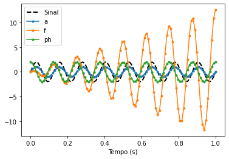

Informação de Fisher
Seja uma amostra aleatória cuja distribuição depende de e tem valores em . Seja a pdf conjunta de . Assuma que é o mesmo para todo . E é duas vezes diferenciável em . A informação é:
Agora assuma que duas derivadas de com respeito a podemos inverter a ordem de integração e diferenciação. Então:
Teorema
Obs.: Estamos tratando da informação de Fisher para o caso unidimensional. Para o caso em que temos , a informação de Fisher será uma matriz de tamanho onde
```python import numpy as np from scipy.stats import norm from scipy.misc import derivative from scipy.optimize import curve_fit
import matplotlib.pyplot as plt from seaborn import violinplot import inspect ```
Exemplo Construtivo
Vamos pensar num caso bem simples: amostra aleatória , onde o parâmetro é conhecido e não.
De forma direta, poderíamos perguntar qual a Informação de Fisher (ou Informação Diferencial) da amostra aleatória sobre o parâmetro desconhecido .
- Vamos encontrar a distribuição conjunta:
- Vamos encontrar a verossimilhança: é a distribuição conjunta como função do parâmetro!
Vamos comparar para e
python
loglikelihood = lambda mu, sigma, x: np.sum(np.log([norm(loc = mu, scale = sigma).pdf(xi) for xi in x]), axis = 0)
```python sigmas = [1,3,5,10] mu_true = 5
mu_range = np.linspace(0,10,1000) ```
```python fig,ax = plt.subplots(2,2,figsize = (16, 10))
fig.suptitle('Comparando Log-verossimilhanças da Distribuição Normal')
def generate_curves(sigma, ax, n = 20, n_times = 50):
for i in range(n_times):
x = np.random.normal(loc = mu_true, scale = sigma, size = n)
logvalues = loglikelihood(mu_range, sigma, x)
ax.plot(mu_range, logvalues, color = 'blue', alpha = 0.2)
ax.vlines(mu_true, ymin = ax.get_ylim()[0], ymax = ax.get_ylim()[1], linestyle = '--')
ax.set_title(r'$\sigma =$ {}'.format(sigma))
ax.set_xlabel(r'$\mu$')
generate_curves(sigmas[0], ax[0][0])
generate_curves(sigmas[1], ax[0][1])
generate_curves(sigmas[2], ax[1][0])
generate_curves(sigmas[3], ax[1][1])
```

- Vamos ver como se comporta derivada. Esse é o score:
```python score = lambda mu, sigma, x: derivative(loglikelihood, mu, dx = 1e-5, args = (sigma, x))
fig,ax = plt.subplots(2,2,figsize = (16, 10))
fig.suptitle('Comparando Scores da Distribuição Normal')
def generate_curves(sigma, ax, n = 20, n_times = 50):
for i in range(n_times):
x = np.random.normal(loc = mu_true, scale = sigma, size = n)
scorevalues = score(mu_range, sigma, x)
ax.plot(mu_range, scorevalues, color = 'blue', alpha = 0.2)
ax.vlines(mu_true, ymin = ax.get_ylim()[0], ymax = ax.get_ylim()[1], linestyle = '--')
ax.set_title(r'$\sigma =$ {}'.format(sigma))
ax.set_xlabel(r'$\mu$')
ax.set_ylim((-10,10))
generate_curves(sigmas[0], ax[0][0])
generate_curves(sigmas[1], ax[0][1])
generate_curves(sigmas[2], ax[1][0])
generate_curves(sigmas[3], ax[1][1])
```

```python fig,ax = plt.subplots(2,2,figsize = (16, 10))
fig.suptitle('Comparando Histogramas dos Scores para mu')
def generate_histograms(mu, sigma, ax, n = 15, n_times = 100):
scorevalues = []
for i in range(n_times):
x = np.random.normal(loc = mu_true, scale = sigma, size = n)
scorevalues.append(score(mu, sigma, x))
violinplot(scorevalues, ax = ax)
ax.set_title(r'$\sigma =$ {}'.format(sigma))
ax.set_xlabel('score')
generate_histograms(5, sigmas[0], ax[0][0])
generate_histograms(5, sigmas[1], ax[0][1])
generate_histograms(5, sigmas[2], ax[1][0])
generate_histograms(5, sigmas[3], ax[1][1])
```

- A informação de Fisher é a Variância da função score em , isto é:
Desigualdade de Cramér-Rao
Seja uma amostra aleatória com pdf . Suponha as hipóteses acima acerca dessa distribuição. Seja com variância finita e é diferenciável. Assim:
A igualdade vale se, e somente se, existem funções e que podem depender em mas não de tal que:
Se for não enviesado
Exemplo Numérico do limite de Cramér-Rao
Considere um sinal (como uma música) com três parâmetros, amplitude, frequência e fase inicia.
Saberemos o número de amostras que sera 100Hz com nível de ruído de 0.1
```python s = lambda t,a,f,ph: anp.sin(2np.pift + ph) # função que representa o sinal
p0 = [2,8,0] # Amplitude, frequência e fase inicial para testar noise = 0.1
T = np.linspace(0,1,100) #100 valores entre 0 e 1 igualmente espaçados plt.plot(T, s(T, *p0), '.-k') plt.xlabel('Tempo (s)') plt.title('Sinal') plt.show() ```

Vamos usar inspect para nos ajudar a pegar labels das funções, isto é, os parâmetros necessários das funções. Essa biblioteca fornece várias funções de ajuda desse tipo. Dê uma olhada.
python
parameters = str(inspect.signature(s)).strip('()').replace(' ', '').split(',')[1:]
p0dict = dict(zip(parameters, p0))
p0dict
{'a': 2, 'f': 8, 'ph': 0}
No caso geral, calcular a Matriz de Informação de Fisher não é trivial. Por isso, vamos calcular para o caso em que as medições são de uma amostra com distribuição multivariada normal, isto é, é uma distribuição normal, só que em mais dimensões, em particular, 441 dimensões (número de pontos no tempo)
Se calcularmos a informação de Fisher, podemos ver que:
onde , é o vetor média da normal multivariada e é a variância de cada marginal da normal. Não se assuste. Na multivariada, temos uma matriz para indicar as variâncias (ela se chama Matriz de Covariâncias, na verdade). O que estou dizendo é que ela é vezes a identidade. É bom conhecer essa distribuição!
Por enquando acredite em mim! Ou no Wikipedia.
Vou chamar
```python
Usamos ** para desempacotar elementos de um dicionário.
string = "a: {a} f: {f} ph: {ph}".format(**p0dict) print(string) ```
a: 2 f: 8 ph: 0
```python D = np.zeros((len(p0), len(T)))
para cada parâmetro
for i, parameter in enumerate(parameters): # para cada ponto no tempo for k, t in enumerate(T):
func = lambda x: s(t, **dict(p0dict, **{parameter: x}))
# Calculamos a derivada com respeito a x, que nesse caso é o valor do parametro
D[i,k] = derivative(func, p0dict[parameter], dx = 1e-4)
```
Veja que o tamanho de D é o seguinte:
python
D.shape
(3, 100)
```python plt.plot(T, s(T, *p0), '--k', lw=2, label='Sinal')
for Di, parameter in zip(D, parameters): # Estamos acessando Di = linha_i(D) plt.plot(T, Di, '.-', label=parameter)
plt.legend() plt.xlabel('Tempo (s)') plt.show() ```

O que indica? É a derivada da média com respeito ao i-ésimo parâmetro. Logo indica o quanto o quando a amostra afeta o parâmetro . Veja que quando temos picos no seno, teremos pico na amplitude,. Também vemos que a fase inicial não tem essa relevância. Vemos também que o sinal se torna mais e mais sensível à frequência.
Assim, podemos calular a informação de fisher, usando einsum
python
I = 1/noise**2*np.einsum('mk,nk', D, D)
print(I)
[[ 4.95000000e+03 -5.64643569e+02 -3.43706036e-09]
[-5.64643569e+02 2.68635205e+05 6.34601694e+04]
[-3.43706036e-09 6.34601694e+04 2.01999999e+04]]
Podemos calcular o limite de Cramér-Rao para qualquer estimador não enviesado. Nesse caso, veja aqui para mais detalhes. Mas não se incomode com os detalhes, se preferir.
```python iI = np.linalg.inv(I)
print('Cramér-Rao Limite Inferior') for parameter, variance in zip(parameters, iI.diagonal()): print('{}: {:.2g}'.format(parameter, np.sqrt(variance))) ```
Cramér-Rao Limite Inferior
a: 0.014
f: 0.0038
ph: 0.014
Estimador Eficiente
é um estimador eficiente de sua esperança se, para todo , vale a igualdade em Cramér-Rao.
Mas nem sempre vale a igualdade, inclusive conhecemos uma consdição necessária e suficiente para isso, que está logo acima.
Estimadores não enviesados com variância mínima
Suponha que seja um estimador eficiente de sua esperança e outro estimador não enviesado. Então para todo valor , será igual ao limite inferior de Cramér-Rao e será pelo menos maior ou igual. Portanto . Isto é, um estimado eficiente de terá menor variância.
Distribuição assintótica de um estimador eficiente
Assuma as hipóteses do teorema de Cramér-Rao. Seja um estimador eficiente para a sua média e . Então:
Distribuição assintótica do MLE
Suponha que obtemos resolvendo a equação , isto é, maximizando a log-verossimilhança (MLE). E suponha que e existem e satisfazem certas condições de regularidade. Então
Como o MLE é não enviesado, então se ele for Eficiente, já sabemos que esse teorema é verdade pelo anterior. (se ele é não enviesado)
Bayesiano
Suponha que adotamos uma priori para com uma pdf diferenciável no intervalo. Sobre condições de regularidade similares àquelas que garantem normalidade assintótica para , pode-se mostrar que que a distribuição a posteriori de vai se aproximadamente uma normal com média e variância , onde é o MLE.